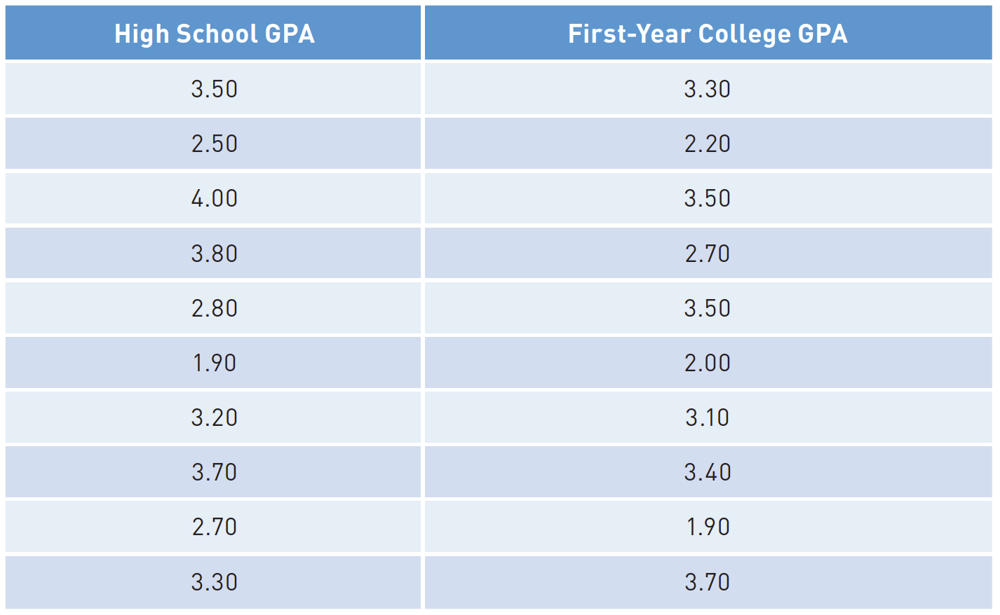
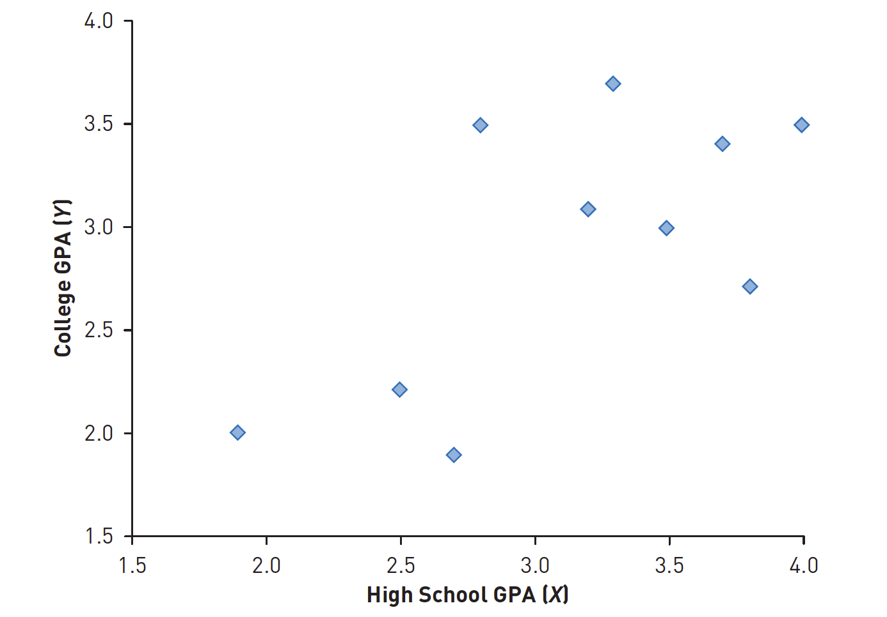
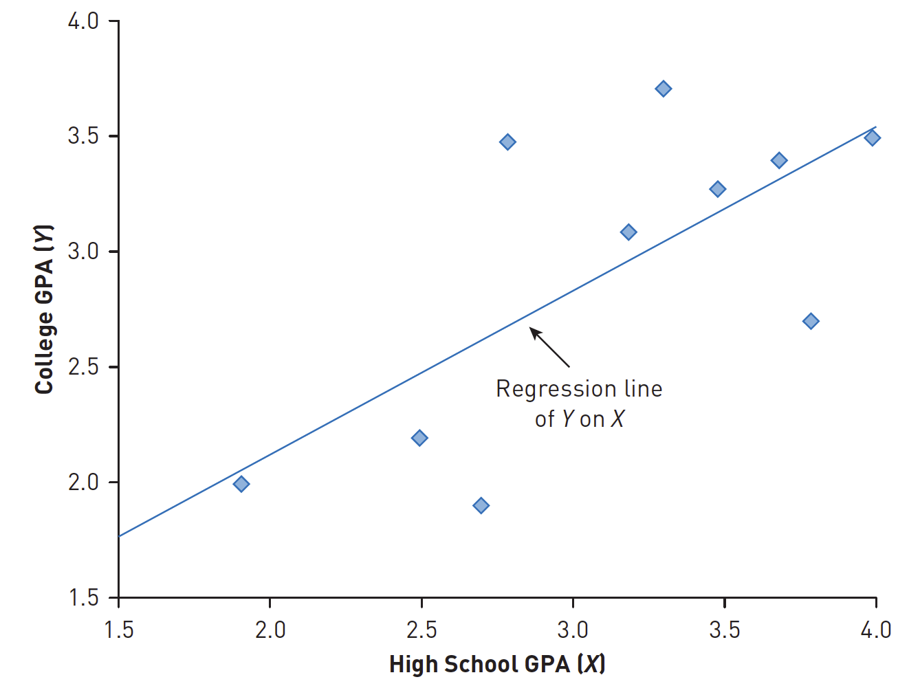
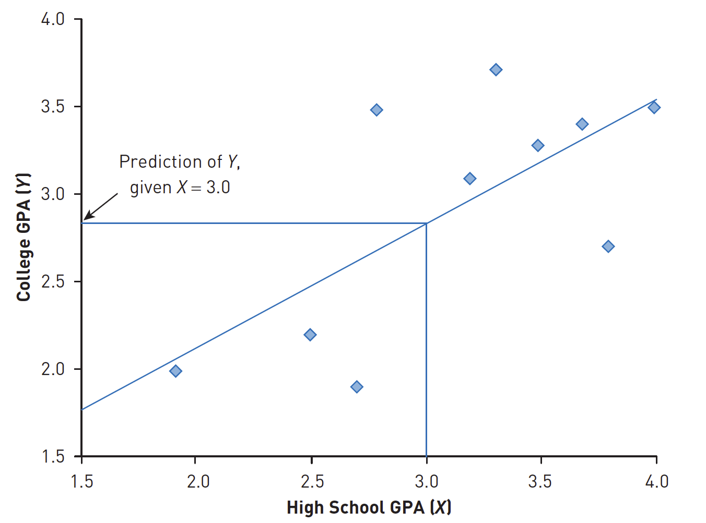
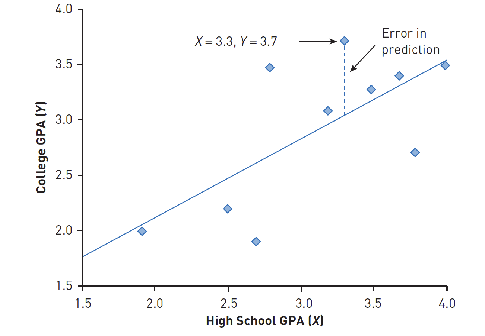

── Attaching core tidyverse packages ──────────────────────── tidyverse 2.0.0 ──
✔ dplyr 1.1.4 ✔ readr 2.1.5
✔ forcats 1.0.0 ✔ stringr 1.5.1
✔ ggplot2 3.5.1 ✔ tibble 3.2.1
✔ lubridate 1.9.3 ✔ tidyr 1.3.1
✔ purrr 1.0.2
── Conflicts ────────────────────────────────────────── tidyverse_conflicts() ──
✖ dplyr::filter() masks stats::filter()
✖ dplyr::lag() masks stats::lag()
ℹ Use the conflicted package (<http://conflicted.r-lib.org/>) to force all conflicts to become errors
A group of researchers in Indonesia were interested in looking at how well social relationship and/or health predicted happiness
The study included more than 72,000 respondents, and differences in happiness mean scores were estimated using linear regression.
The results found that level of social relationship health did predict happiness significantly
What is prediction?
The basic idea is to use a set of previously collected data (such as data on variables X and Y), calculate how correlated these variables are with one another, and then use that correlation and the knowledge of X to predict Y.
Example
A researcher collects data on total high school grade point average (GPA) and first-year university GPA for 400 students in their freshman year at the state university.
He computes the correlation between the two variables. Then, he uses the techniques you’ll learn about later in this chapter to take a new set of high school GPAs and (knowing the relationship between high school GPA and first-year college GPA from the previous set of students) predict what first-year GPA should be for a new sample of 400 students.
The logic of prediction
Prediction is the computation of future outcomes based on a knowledge of present ones.
When we want to predict one variable from another, we need to first compute the correlation between the two variables.
Data

Plot

Regression line

Predicting

Error in predictiong

Basic formula of regression
\[
y=bX+a
\]
y is the predicted score of Y based on a known value of X,
b is the slope of the line,
X is the score being used as the predictor, and
a is the point at which the line crosses the y-axis.
Detailed formula
\[
b = \frac{{\Sigma{XY}}-(\Sigma{X}\Sigma{Y}/n)}{\Sigma{X^2}-[(\Sigma{X})^2)/n]}
\]